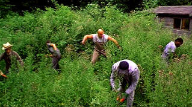
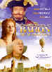

|
Greenfingers/ B+,A- |
|
Columbia/2001/91/ANA 1.85/PS 1.33 |
Maybe we should start by pointing out that
Greenfingers is based on fact. I am certain it takes comfortable liberty
with the dramatic facts, but it succeeds on dishing up delicious comedy
mixed with a tinge of drama to excellent effect. A sentimental and
romantic prison drama, with a spirit of sweetness permeating the plot, the
film certainly falls into the "feel-good" category of filmmaking.
Hard timer Colin Biggs is reluctant to accept his transfer to
a model minimum security prison after serving his years with exemplary good
behavior. On arrival, Colin's keep's to himself, but another prisoner, an
old timer, Fergus, is persistent about making contact. Despite attempting to
keep his distance, Colin is inspired to find a new path through life by Fergus
who spouts advice like "Adversity is your ally lad." Indeed, the cliché
advise is taken to heart.
 |
| Watch out
weeds, here we come. ©Columbia |
Through Fergus' efforts to communicate with
Colin, a gardening project is started by the prison governor Hodge. The
sowing of a few spare seeds gives the gift of renewed life to the prisoners.
Their gardening succeeds on levels beyond their imagination. Some romance
buds as a garden by product. It's a celebration of color and life.
Writer/director Joel Hershman's script grows like a
force of nature; and
yes, Greenfingers blooms with a breadth of springtime. I have great respect for scripts that move forth with perfect logic and
Greenfingers is a good example. No cheap laughs. Everything seems natural to
the setting. Humor evolves from what has been planted before it. Hershman
adds nice montage work in planting of the garden, building of the garden,
growing of the garden. Hershman plants his film with a lovely emotional and
physical balance of characters Fergus is a wonderful polish job on a
familiar prison character. There are many wonderful moments in the film, but Fergus's funeral pyre is simply inspirational. Hershman does
not try to squeeze it to excess. A hallmark of the fine taste that went in
to the movie making of Greenfingers is restraint.
Clive Owen lends Colin Biggs a natural fatefulness. Watching the
blossoming of the morose Biggs is a particular joy. Helen Mirren is terrific
as the perpetually sunny Georgiana Woodhouse, the doyenne of the British
garden world. David Kelly deserves a special nod as Fergus and Natasha
Little's Primrose reminds me a bit of the lean comic turns in British
comedies of old. Overall excellent supporting cast, again, a tribute to the
Hershman taste.
Columbia has polished up another stunning
transfer. The color simply comes to life on the screen. A wonderful variety
and range of color finds its way into scene after scene. It's certainly
appropriate to a film with a garden at its center. The range of fleshtones
is natural. Shadow detail is very good and black level follows suit.
Extremely sharp for the most part with very slight peak transitional
ringing. Close-ups are sharp enough to reveal every skin pore to perfection.
Some minor artifacting on the sign in the background at the prison
entrance. Fine variety of music marries with the action very well.
Good open Dolby Digital 5:1 encoding but not especially directional. Sound
is consistently clean.
Reviewed on a Sharp 9000VX DLP Projector
|
|
|
|

Selections from the
Feature Archive include articles on Akira Kurosawa,
Frank Darabont,
Blonde Bimbos,
Hollywood Street Gangs, or
Vietnam: The Hollywood Pariah, and many
more....
Sturges Emerges

Preston Sturges was Hollywood's resident comic genius for more
than a decade. His movies are timeless. Click on his image to read all about
it.

Click on the DVD MIA symbol for
profiles of DVDs missing in action.
Add films to the
DVD MIA Master List by filling out
a simple form.
Click Here

The Adventures of
Baron Munchausen/A,A-

Director Terry Gilliam's richly detailed interpretation of the outlandishly
imagined and fabricated exploits of the legendary eighteenth-century German adventurer and
storyteller.


The National Film Preservation Foundation (NFPF) is the nonprofit organization created by the U.S. Congress to save
America's film heritage.

The Cinema Laser
A home grown magazine for laserphiles that has been publishing for a number of years and has
embraced DVD in a big way. Lots of helpful information.

Doug Pratt's been doing almost longer than anyone in the business, reviewing laser discs, that is,
and now DVDs too. The venerable Laserdisc Newsletter has been publishing since 1984. Pratt probably
has a large enough stock of laser discs in his house to build a DVD-proof bomb shelter. Check out
his on-line reviews at
DVDlaser.com.
|